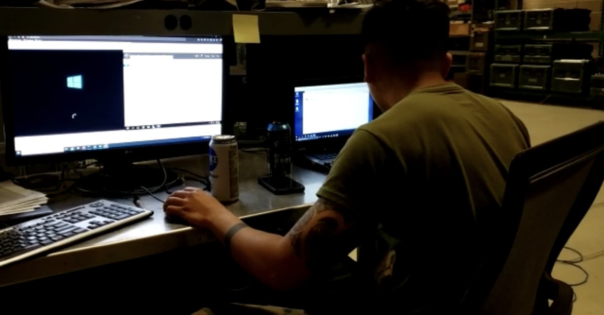

Work Experience
IT Assistant
Associated Students - California State University Northridge
Jan 2024 - Present
The Associated Students IT assistant is responsible for supporting student leaders and the staff in technology use. Responsibilities include but are not limited to: IT support and troubleshooting, network connectivity, file management, email administration.
Optional list:
- Created powershell scripts to automate certain tasks to reduce time spent doing repetitive tasks, increasing daily efficiency
- Increased cybersecurity threshold of Associated Students by creating recurring patch jobs
- Responsible for documenting critical and niche procedures so other IT staff can effectively accomplish AS IT's responsibilities as a
Education
California State University Northridge, August 2023 - Present
Bachelors in progress